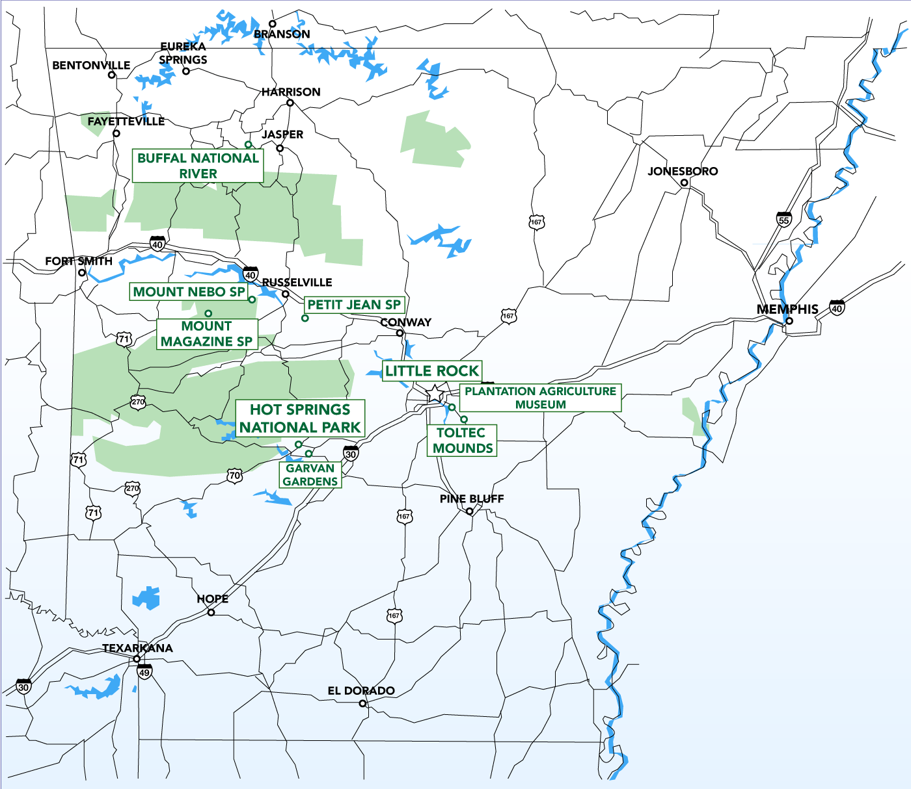

Arkansas name is from the Osage language, of Siouan derivation; it denoted their related kin, the Quapaw people. The state's diverse geography ranges from the mountainous regions of the Ozark and the Ouachita Mountains, which make up the U.S. Interior Highlands, to the densely forested land in the south known as the Arkansas Timberlands, to the eastern lowlands along the Mississippi River and the Arkansas Delta. The capital and most populous city is Little Rock, located in the central portion of the state, a hub for transportation, business, culture, and government. The northwestern corner of the state, such as the Fayetteville–Springdale–Rogers Metropolitan Area and Fort Smith metropolitan area, is a population, education, and economic center.
The culture of Arkansas is observable in museums, theaters, novels, television shows, restaurants, and athletic venues across the state. Notable people from the state include politician and educational advocate William Fulbright; former president Bill Clinton, who also served as the 40th and 42nd governor of Arkansas; general Wesley Clark, former NATO Supreme Allied Commander; Walmart founder and magnate Sam Walton; singer-songwriters Johnny Cash, Charlie Rich, Jimmy Driftwood, and Glen Campbell; actor-filmmaker Billy Bob Thornton; poet C. D. Wright; and physicist William L. McMillan, who was a pioneer in superconductor research.
South > Arkansas
Map of Arkansas
Interactive Arkansas map, showing all parks, preserves, trails and other locations

Whitaker Point
Buffalo National River
Buffalo National River
America's First National River, established in 1972, Buffalo National River flows freely for 135 miles and is one of the few remaining undammed rivers in the lower 48 states

Hot Springs National Park
Urban park featuring a historic row of early 20th-century bathhouses built atop natural hot springs

Big Dam Bridge
Little Rock, AR
Little Rock
Big Dam Bridge | Central High School | Lake Willastein | The Old Mill | Pinnacle Mountain SP | Riverfront Park | River Market District | Two Rivers Park | William J. Clinton Library and Museum
Little Rock is perhaps best known for the Little Rock Nine, a group of Black students who enrolled in the historically all-white Little Rock Central High School in 1957. The students' enrollment, which followed the Supreme Court decision that deemed segregation of schools unconstitutional, brought civil rights to the national spotlight. Little Rock honors its place in the civil rights movement with monuments and exhibits scattered throughout the city's parks and museums.
Cedar Creek Trail
Petit Jean SP, AR